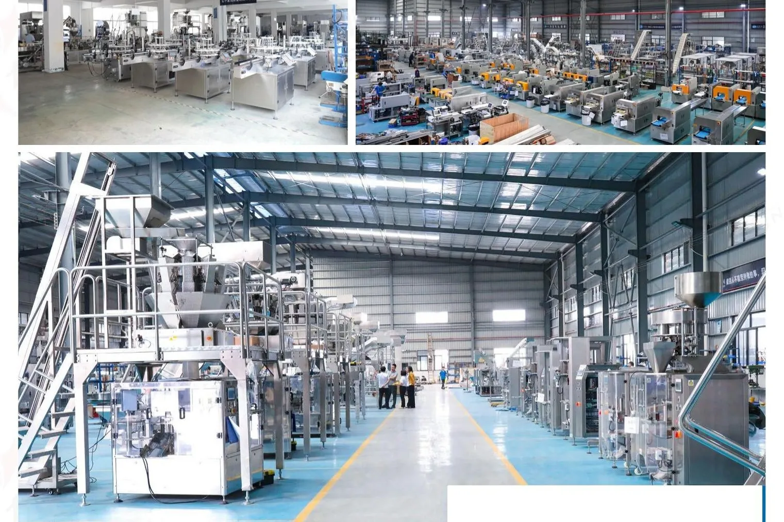

How to Buy a Packing Machine from China: Step-by-Step Guide
By the FOOD LINE engineering team · Updated
Short answer: Buy a packing machine from China safely by following six steps: send five product/pack specs, run a free sample test with video, lock in voltage and SUS304/316L scope in writing, pay 30 % deposit + 70 % after FAT video approval (or L/C at sight), and verify remote or on-site installation with an 18-month warranty.

1. Prepare five technical inputs before requesting a quote
Accurate quotations start with clear inputs rather than guessing from a catalogue photo. Before contacting a manufacturer, prepare five details: (1) product name and physical form (powder, free-flowing granule, irregular solid, liquid/paste or rigid item), (2) target fill weight or volume per pack, (3) required output in bags per minute or per 8-hour shift, (4) pack format and bag dimensions, and (5) your factory electrical supply (voltage, phase and Hz). For a structured walkthrough, read our 5-step packing machine buyer's guide or browse all automatic packing machines & vertical form fill seal systems.
2. Insist on a free sample test with your product and film
Different powders, snacks and sauces behave very differently on the same frame: fine coffee powder can dust the seal zone, oily seasonings bridge in a hopper, and viscous sauces drip without anti-drip nozzles. At FOOD LINE, you can send your real product and roll film or premade pouches for a free sample test — we run them on machines such as our full-auto coffee powder sealing machine or vertical sachet liquid packaging machine and send back the running video and finished sample packs before you commit.
3. Confirm scope, voltage and contact materials in writing
Two quotes with similar prices can cover very different machine scopes. Lock these engineering details into your proforma invoice before paying a deposit:
| Checklist item | What to confirm in writing | FOOD LINE standard & options |
|---|---|---|
| Machine & doser scope | Mainframe + matching feeder/doser (elevator, auger, weigher or pump) | Single machines or complete tested lines |
| Local power supply | Exact voltage, phase and frequency at your plant | 220/380 V 50 Hz standard; 110/220/415/440 V 50/60 Hz custom-built |
| Contact material | Food-grade vs corrosion-resistant stainless steel | SUS304 standard; SUS316L for salty, acidic or corrosive products |
| Compressed air | Pressure & flow requirement (often 0.6–0.8 MPa) | Matched screw air compressor available if needed |
| Options & inspection | Nitrogen flushing, date coder, dust extraction, inline check weighing | Integrated check weigher machine & metal detector |
4. Understand payment terms and manufacturing lead times
Confirmed commercial terms at FOOD LINE are 30 % T/T deposit to start production and 70 % balance before shipment after you inspect and approve the factory acceptance test (FAT) video; L/C at sight is also accepted for larger orders. Standard single machines typically ship in 20–35 working days after deposit, while complete multi-machine lines and custom projects take 35–60 days. To see what drives equipment cost, read 7 factors that set packing machine price.
5. Approve the factory acceptance test (FAT) video before balance payment
Never authorise the final 70 % balance on a still photo alone. During FAT, verify that the machine runs your specified pack size with your actual roll film or pouches, check bag-weight repeatability, inspect horizontal and vertical seal seams for leaks or wrinkles, confirm sustained packs-per-minute speed, and test safety interlocks such as no-product-no-bag and film-break alarms.
6. Shipping, installation, training and 18-month warranty
Every machine ships with an English manual, wiring diagram, video guides and a set of wear parts, with spare parts stocked for fast dispatch. Remote video commissioning and technical support are always free. If you prefer on-site commissioning, our engineers can travel to your factory for installation and operator training (buyer covers air tickets, visa, accommodation and the engineer's daily allowance). Every machine includes an 18-month warranty (wear parts excluded) plus lifetime technical support. Learn more about FOOD LINE or request a quote and sample test.
FAQ
How do buyers verify machine quality before paying the final 70 % balance?
Before shipment we run a factory acceptance test (FAT) using your film or pouches and share detailed running video showing speed, seal quality and weigher/doser accuracy; the 70 % T/T balance is paid only after you approve the FAT video.
Can you build packing machines for USA 110 V / 60 Hz or Europe/Australia 415 V?
Yes. While 220 V or 380 V 50 Hz is standard, we build machines to 110 V 60 Hz, 220 V 60 Hz, 415 V 50 Hz or 440 V 60 Hz at no or little extra cost, with English HMI and documentation (other HMI languages on request).
Do I have to fly an engineer from China to install a single packing machine?
Not necessarily. Most buyers commission single machines using our pre-wired setup, English manual, wiring diagram and free remote video support. For complex multi-machine lines or buyers who prefer hands-on training, our engineers can travel on site.
What warranty and spare parts come with a FOOD LINE packing machine?
Every machine includes an 18-month warranty (wear parts excluded), a complimentary set of wear parts shipped with the machine, stocked spare parts for fast dispatch and lifetime technical support.